Network
/ˈnetˌwərk/
noun
2. A group or system of interconnected people or things.
- Oxford English Dictionary
Remember that a network needs to be interconnected. This means it needs to have nodes and edges.
Edges have no orientation or direction and the nodes are unordered.
For example, Jane is married to Ryan:
is the same as: Ryan is married to Jane:
Edges have direction/orientation associated with them.
When analyzing or describing a network it is helpful to understand a node's position in a network, especially how important it is in the network. There are a couple of different measures that can be used to find them.
One way to measure the importance of a node is to count how many edges it connects to. This is called a node's degree. In the network below, the number inside each node represents its degree.
What is the degree of the red highlighted node? (remember that this is a undirected network)
2
The higher a node's degree is, the higher propability it has of catching what is flowing through the network. This can be:
For directed networks, degree is calculated a bit differently. We have to calculate the indegree and the outdegree.
The indegree is the amount of edges flowing into a node.
The outdegree is the amount of edges flowing out of a node
What is the the indegree and outdegree of the node highlighted in red?
Indegree: 2
outdegree: 2
However, one drawback of using degree is that it only good for understanding the local importance of a node.
Measure of the relative distance of a node to all the other nodes in the network. It is calculated by its shortest path to the other nodes.
It is often normalized to all of the possible nodes so (number of nodes in the network - 1)/The sum of all the shortests paths that node can take
What is the closeness centrality of the red highlighted node? (remember that this is a undirected network)
(6-1)/8
Measure of how often a node is the "bridge" between other nodes. These are the nodes that have a high chance of being in a randomly selected shortest bast between two nodes.
Fraction of shortest paths that go through Node X / All the shortest Paths between all nodes
The value of a nodes connections is important